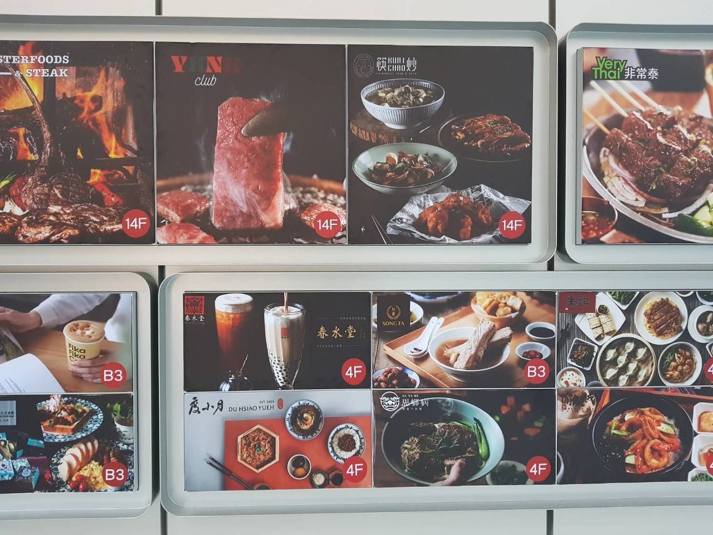

記者林旼叡：「期望在12/25正式營運的A13遠百有4大品牌升級進駐，像是饗饗Buffet有旭集日式料理，馬辣也推出新馬辣PLUS+，連頂級和牛都開新餐廳，還有威秀影城也推頂級影廳。」 為了在信義區立足，品牌升級百貨也升級，主打智慧的A13遠百， 外觀牆面運用更多電視牆科技，數位看板行銷讓民眾路過眼球先被吸住，不只掛看板， 電視牆啟用，一樓專櫃瞄一下，精品和美妝共駐，整棟設計寬敞，科技感裡頭卻分很多主題。

人道鵝肝醬 日本草莓蛋糕 KTV美食戰 心得